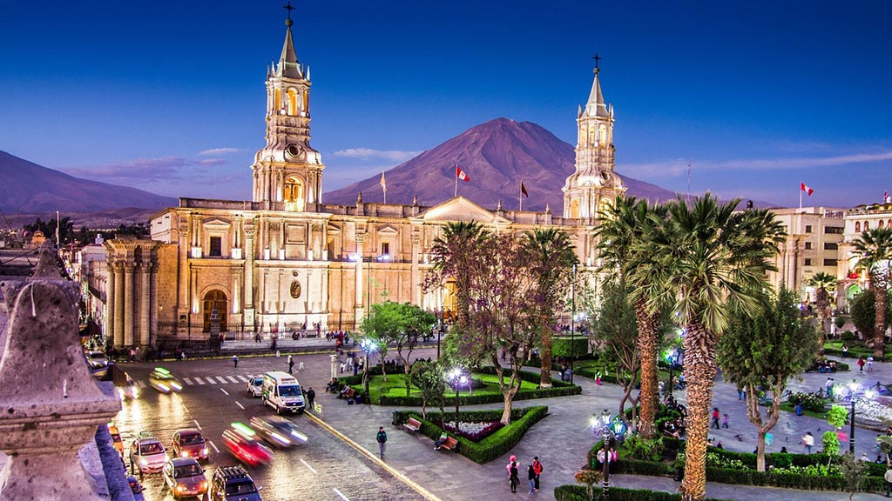
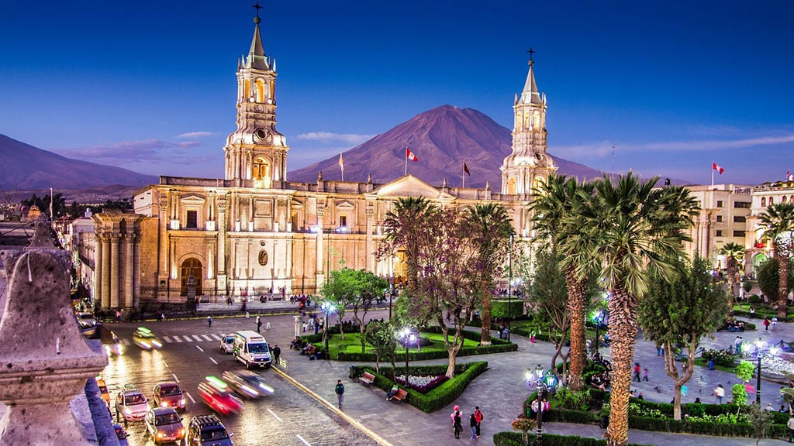

Dicas de Viagem
O país oferece uma combinação única de história, natureza, cultura e gastronomia que o torna um destino fascinante para os viajantes. Sendo assim, aqui estão algumas dicas de viagem para locais no Peru:
Curiosidades
- Cusco, a antiga capital do Império Inca, é considerada o "umbigo do mundo" pelos incas. Eles acreditavam que Cusco era o centro do universo.
- O Peru é o lar de uma das civilizações antigas mais impressionantes do mundo: os incas. Eles construíram cidades e estruturas impressionantes, como Machu Picchu, que ainda hoje intrigam os arqueólogos e encantam os visitantes.
- O Peru possui uma das maiores diversidades biológicas do mundo. É considerado um dos países megadiversos, abrigando uma grande variedade de ecossistemas, desde a floresta amazônica até as cordilheiras dos Andes e o deserto costeiro.
- O Lago Titicaca, localizado na fronteira entre o Peru e a Bolívia, é o lago navegável mais alto do mundo. É considerado sagrado pelos povos indígenas da região e abriga ilhas flutuantes feitas de totora, uma planta aquática.
- A Cordilheira dos Andes atravessa o Peru, tornando-o um país com paisagens impressionantes e uma variedade de microclimas. A montanha mais alta do Peru e a segunda mais alta das Américas, o Huascarán, com 6.768 metros de altura, está localizada nos Andes peruanos.


.jpg "Machu Picchu")
 

Lima
Lima, a capital do Peru, é uma cidade moderna e vibrante, com uma mistura única de história, cultura e gastronomia. O centro histórico de Lima, conhecido como o Centro Histórico de Lima, é uma área fascinante, com belos edifícios coloniais, praças históricas e igrejas antigas. Alguns dos destaques incluem a Plaza de Armas, a Catedral de Lima e o Convento de San Francisco, famoso por suas catacumbas subterrâneas. Lima também é famosa por sua culinária reconhecida internacionalmente, com uma variedade de restaurantes renomados que oferecem pratos deliciosos e inovadores.
Cusco
Cusco é uma cidade encantadora, localizada nas montanhas dos Andes peruanos. Ela foi a capital do Império Inca e ainda preserva muitos vestígios de sua rica história. O centro histórico de Cusco é uma mistura cativante de arquitetura inca e colonial espanhola, com ruas de paralelepípedos, praças pitorescas e igrejas impressionantes, como a Catedral de Cusco e o Templo Qorikancha. Cusco também é um ponto de partida popular para visitar Machu Picchu e o Vale Sagrado dos Incas.
Machu Picchu
Machu Picchu é uma das maravilhas arqueológicas mais famosas do mundo. Essa antiga cidade inca está situada em uma montanha na região dos Andes e é cercada por paisagens espetaculares. Machu Picchu foi construída no século XV e posteriormente abandonada, permanecendo desconhecida pelo mundo exterior até sua descoberta em 1911. Hoje, é um destino turístico imperdível, atraindo visitantes de todo o mundo. As ruínas de Machu Picchu são impressionantes, com templos, terraços agrícolas, fontes e estruturas arquitetônicas surpreendentes.
Vale Sagrado dos Incas
O Vale Sagrado dos Incas é uma região deslumbrante localizada nas montanhas dos Andes, próxima a Cusco. O vale é repleto de paisagens deslumbrantes, ruínas incas, cidades coloniais e mercados tradicionais. Alguns dos destaques incluem as ruínas de Pisac, famosas por suas terraças agrícolas e suas feiras de artesanato, Ollantaytambo, uma antiga cidade fortificada com ruínas impressionantes, e Moray, um complexo arqueológico com terraços circulares que eram usados para fins agrícolas pelos incas. O Vale Sagrado também é conhecido por suas comunidades locais, onde é possível aprender sobre a cultura andina e experimentar a culinária tradicional.
Arequipa
Arequipa é a segunda maior cidade do Peru e está situada no sul do país, cercada por belas paisagens vulcânicas. Conhecida como a "Cidade Branca" devido à sua arquitetura colonial em pedra vulcânica branca, Arequipa é um local encantador para explorar. O centro histórico de Arequipa, declarado Patrimônio Mundial pela UNESCO, possui belas praças, igrejas impressionantes, como a Catedral de Arequipa, e o Monastério de Santa Catalina, um complexo religioso que parece uma pequena cidade dentro da cidade. Além disso, Arequipa serve como ponto de partida para visitar o Cañon del Colca, um dos cânions mais profundos do mundo e lar do majestoso condor andino.